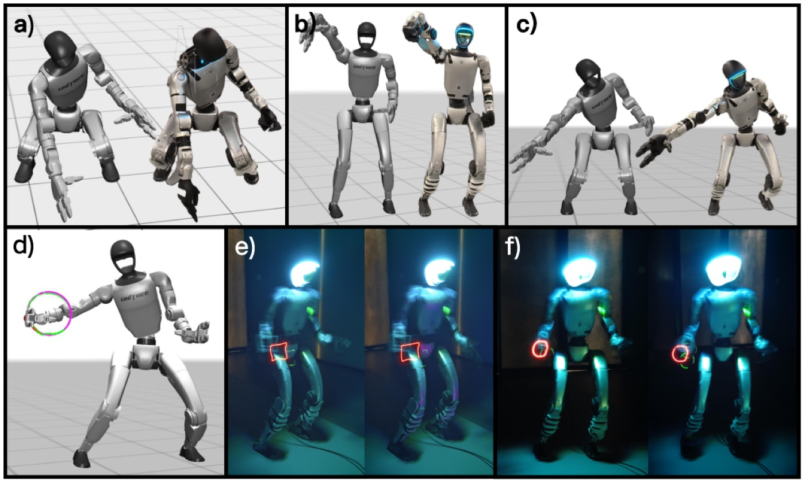
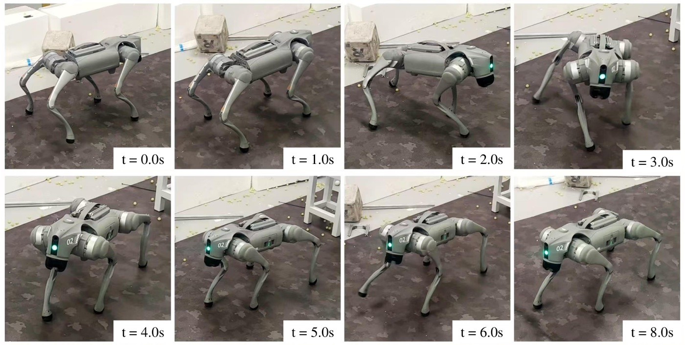

About
News
Selected Work
Other Papers
Education
EN
/
中文
Robotics · Learning · Control
About
I am a direct-track Ph.D. student in Computer Science at Shanghai
Jiao Tong University and Shanghai Innovation Institute. My research
focuses on robot learning, reinforcement learning, humanoid robots,
legged locomotion, loco-manipulation, and sim-to-real transfer.
I received my B.Eng. in Automation from Tsinghua University in 2023.
Humanoid loco-manipulation ↗
Robot reinforcement learning ↗
Legged locomotion & transfer ↗
News
2026-10-09 arXiv Introducing
PartiGen : part-aware humanoid motion generation from language.
2026-09-05 CoRL 2026 UniLab and
GeoAlign explore scalable robot RL and spatial alignment for VLA models.
2026-07-28 arXiv P³ tackles latent uncertainty for more stable VAE-based robot policy learning.
2026-06-11 ICML 2026 PolyFlow embeds polyhedral constraints into flow matching for safe generation.
2026-05-30 RA-L 2026 GLAD separates global terrain context from local foothold geometry for humanoid locomotion.
2026-04-27 RSS 2026 HiWET and
GS-Playground span humanoid loco-manipulation and photorealistic simulation.
2026-01-31 2025-06 (mid) IROS 2025 MUTE and
UniLegs explore quiet locomotion and control across robot morphologies.
Selected Work
Selected first-author and co-first-author papers. * Equal contribution.
2026 Robot RL infrastructure
UniLab: A Heterogeneous Architecture for Robot RL Beyond GPU-Dominant Paradigms
Y Jia*, Z Cao* , M Yu*, H Zhang*, S Chen*, D Jiang*, M Li, X Li, Y Liu, J Wu, Z Li, ...
CoRL 2026 Conference on Robot Learning, 2026. * Equal contribution.
Scholar arXiv Project

2026 Humanoid loco-manipulation
HiWET: Hierarchical World-Frame End-Effector Tracking for Long-Horizon Humanoid Loco-Manipulation
Z Cao , L Yan, Y Zhang, S Chen, J Ma, T Zhan, S Fu, Y Jia, C Lu, Y Gao
RSS 2026 Robotics: Science and Systems (RSS), 2026.
Scholar arXiv
2026 Learning motion skills
Learning Motion Skills with Adaptive Assistive Curriculum Force in Humanoid Robots
Z Cao , Y Zhang, B Nie, H Lin, H Li, Y Gao
ICRA 2026 IEEE International Conference on Robotics and Automation (ICRA), 2026.
IEEE Scholar arXiv
2025 Quiet quadruped locomotion
MUTE: Minimizing Acoustic Noise: Enhancing Quiet Locomotion for Quadruped Robots in Indoor Applications
Z Cao , B Nie, Y Zhang, Y Gao
IROS 2025 IEEE/RSJ International Conference on Intelligent Robots and Systems (IROS), 2025, pp. 17972-17979.
Scholar DOI arXiv

2025 Control across morphologies
UniLegs: Universal Multi-Legged Robot Control through Morphology-Agnostic Policy Distillation
W Xi*, Z Cao* , C Ming, J Zheng, G Zhou
IROS 2025 IEEE/RSJ International Conference on Intelligent Robots and Systems (IROS), 2025, pp. 10698-10703. * Equal contribution.
Scholar DOI arXiv
Other Papers
Additional publications, listed by year.
2026
2026
PartiGen: Part-Aware Representations for Language-Conditioned Humanoid Motion Generation
C Huang, Z Cao , T Zhan, H Li, Y Zhang, L Yan, C Ming, K Zhu, Y Chen, S Fu, Z Zhou, X Peng, K Zhang, B Xing, J Bao, Y Yang, Y Gao
arXiv preprint arXiv:2610.13373, 2026.
Scholar arXiv
2026
P3: Probabilistic Policy Propagation for Stable VAE-Based Robot Learning
L Yan, J Ma, Y Zhang, S Fu, Z Cao , K Zhu, Y Chen, Y Gao
arXiv preprint arXiv:2607.25541, 2026.
Scholar arXiv
2026
PolyFlow: Safe and Efficient Polytope-Constrained Flow Matching with Constraint Embedding and Projection-free Update
J Ma, Q Yang, Y Zhang, L Yan, Z Cao , Y Zhang, Y Gao
ICML 2026 International Conference on Machine Learning, 2026.
Scholar arXiv
2026
GeoAlign: Beyond Semantics with State-Guided Spatial Alignment in VLA Models
Y Chen, Z Cao , X Peng, Y Zheng, X Si, Y Li, L Yan, K Zhu, X Chen, S Fu, T Zhan, Y Jia, J Yao, Y Xie, K Wang, C Lu, Y Gao
CoRL 2026 Conference on Robot Learning, 2026.
Scholar arXiv
2026
MAKP: Multi-mode Accurate Kicking Policy for Humanoid Robots
Z Zhang, K Xu, Z Cao , Y Chen, P Wang, H Li, Y Zhang, S Fu, X Shen, X Yang, Y Gao
ICRA 2026 IEEE International Conference on Robotics and Automation (ICRA), 2026, pp. 5219-5226.
Scholar IEEE
2026
Global-Local Attention Decomposition for Terrain Encoding in Humanoid Perceptive Locomotion
S Fu, Y Zhang, Z Cao , L Yan, Y Chen, Y Yin, Y Gao
RA-L 2026 IEEE Robotics and Automation Letters, 2026.
Scholar arXiv
2026
GS-Playground: A High-Throughput Photorealistic Simulator for Vision-Informed Robot Learning
Y Jia, H Zhang, Z Zhang, J Wu, M Yu, Z Wang, D Jiang, Z Li, C Cao, Z Yu, …, Z Cao , …, G Zhou
RSS 2026 Robotics: Science and Systems (RSS), 2026.
Scholar arXiv Project
2026
HierKick: Hierarchical Reinforcement Learning for Vision-Guided Soccer Robot Control
Y Chen, Z Zhang, Z Cao , Y Chen, S Fu, L Yan, Y Zhang, J Liu, H Li, Y Gao
ICRA 2026 IEEE International Conference on Robotics and Automation (ICRA), 2026.
Scholar arXiv
2026
FocusNav: Spatial Selective Attention with Waypoint Guidance for Humanoid Local Navigation
Y Zhang, J Ma, L Yan, Z Cao , Y Zhang, H Li, Y Gao
arXiv preprint arXiv:2601.12790, 2026.
Scholar arXiv
2026
Keep On Going: Learning Robust Humanoid Motion Skills via Selective Adversarial Training
Y Zhang, Z Cao , B Nie, H Li, Z Jiangwei, Q Sun, X Hu, X Yang, Y Gao
AAAI 2026 Proceedings of the AAAI Conference on Artificial Intelligence, 40 (22), 18800-18808, 2026.
Scholar DOI arXiv
2026
Coordinated Humanoid Robot Locomotion with Symmetry Equivariant Reinforcement Learning Policy
B Nie, Y Zhang, R Jin, Z Cao , H Lin, X Yang, Y Gao
AAAI 2026 Proceedings of the AAAI Conference on Artificial Intelligence, 40 (22), 18523-18531, 2026.
Scholar DOI arXiv
2026
Disturbance-Aware Adaptive Compensation in Hybrid Force-Position Locomotion Policy for Legged Robots
Y Zhang, B Nie, Z Cao , Y Fu, Y Gao
ICRA 2026 IEEE International Conference on Robotics and Automation (ICRA), 2026.
IEEE Scholar arXiv
2025
2025
Contrastive Forward Prediction Reinforcement Learning for Adaptive Fault-Tolerant Legged Robots
Y Fu, Y Zhang, Q Yang, L Yan, Z Cao , Y Gao
CoRL 2025 Proceedings of The 9th Conference on Robot Learning, PMLR 305:3285-3303, 2025.
Scholar PMLR
2025
Anticipate Before Act: Prediction Based Constrained Reinforcement Learning Framework for Skiing Robot Control
H Li, X Yang, J Zhu, Z Cao , Y Zhang, Y Gao
RA-L 2025 IEEE Robotics and Automation Letters 10 (12), 13169-13176, 2025.
Scholar DOI
2025
Stochastic Trajectory Optimization for Robotic Skill Acquisition From a Suboptimal Demonstration
C Ming, Z Wang, B Zhang, Z Cao , X Duan, J He
RA-L 2025 IEEE Robotics and Automation Letters 10 (6), 6127-6134, 2025.
arXiv Scholar DOI
2024
2024
Constrained Dirichlet Distribution Policy: Guarantee Zero Constraint Violation Reinforcement Learning for Continuous Robotic Control
J Ma, Z Cao , Y Gao
RA-L 2024 IEEE Robotics and Automation Letters 9 (12), 11690-11697, 2024.
Scholar DOI
2023
2023
Real is Better than Perfect: Sim-to-Real Robotic System in Secondary School Education
J Gao, H Guo, Z Cao , P Huang, G Zhou
IROS 2023 IEEE/RSJ International Conference on Intelligent Robots and Systems (IROS), 2023, pp. 4480-4487.
Scholar DOI
Preprints and Manuscripts
SSRN
Safety Protection for Reinforcement Learning-Based Motion Policy Improvement in Legged Robots
Y Zhang, Y Gao, Z Cao
SSRN working paper 5067499, 2024.
Scholar SSRN
Education
Shanghai Jiao Tong University / Shanghai Innovation Institute
Direct-track Ph.D. student in Computer Science, 2023 - Present
Tsinghua University
B.Eng. in Automation, 2019 - 2023